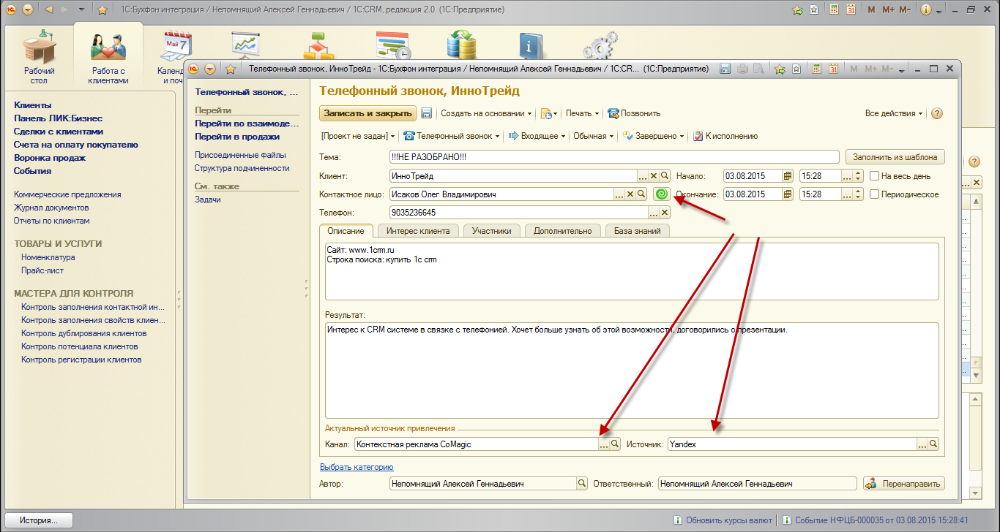
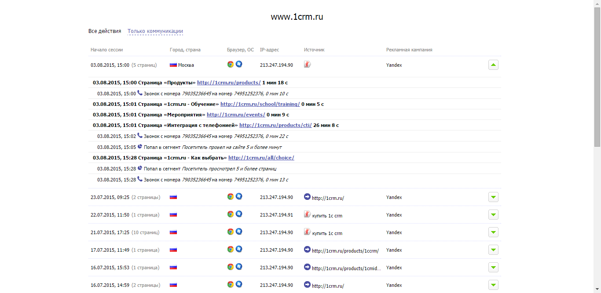

Сервисы Comagic для повышения продаж и эффективности интернет рекламы
Система CoMagic.Коллтрекинг
В решение 1С:CRM интегрирован сервис "CoMagic.Коллтрекинг". Данный сервис позволяет подключить его к одному или нескольким сайтам и связать их с рекламными компаниями, которые запущены в Google Adwords и/или Yandex Direct. При этом есть возможность получить точную информацию по какой именно кампании и из какого источника к нам пришел клиент. Именно эту задачу берет на себя сервис системы CoMagic.Коллтрекинг.
Связывание поисковых запросов с клиентом, который обратился в нашу организацию выполнено с помощью так называемых динамических телефонных номеров. Суть заключается в том, что в зависимости от посещаемости сайтов определяестя пул динамических номеров, которые отображаются на сайте при заходе на него потенциальных клиентов. Одним из действий на сайте потенциальный клиент может совершить звонок по тому номеру телефона, который для него высветился. Данный номер уникален. В результате, при совершении звонка в организацию потенциального клиента мы уже точно знаем по какой кампании он к нам пришел. Это позволяет рассчитывать эффективность маркетингового бюджета в части интернет-рекламы и управлять им.

Но и это еще не всё!
Помимо получения точной информации об источнике обращения потенциального клиента в организацию, менеджер, на которого поступил звонок получает доступ к личному кабинету сервиса CoMagic.Коллтрекинг, в котором отображается информация по всем страницам и продолжительности посещения потенциальным клиентом на сайте организации, что позволяет сразу продолжить предметное общение с клиентом.

Руководитель получает полную картину "Маркетинговой Воронки продаж", когда верхними этапами Воронки являются посещения сайта, а нижними этапами фактические продажи клиентов по верхним активностям.

Как подключить сервис и его настроить в решении 1С:CRM?
Для подключения сервиса необходимо открыть форму в разделе "Администрирование, настройка, сервисные функции - Настройки системы - Интеграция с телефонией (СофтФон)".
Установить флажок "Использовать сервис Comagic" и указать логи и пароль для доступа в личный кабинет Comagic.
Примечание: Логин и пароль необходимо указывать для пользователя, у которого настроены права "Продвинутый пользователь" в системе Comagic.
Для работы сервиса также необходимо настроить решение 1С-Рарус: Интеграция с телефонией (Софтфон), т.к. именно через него и выполняется все взаимодействие с сервисом Comagic. С рабочего места, где установлено решение 1С-Рарус: Интеграция с телефонией (Софтфон), возможно выполнять все указанные выше действия.
Что необходимо настроить еще?
1. При настройке сервера 1С-Рарус: Интеграция с телефонией (Софтфон) необходимо его опубликовать (пробросить) для доступа снаружи (сервер включает в себя web-сервис при установке). Адрес внешнего порта всегда имеет значение на единицу больше, чем порт, настроенный на сервере. Например, сервер настроен на порт 13528, значит web-сервис доступен будет по порту 13529. Данный порт и внешний адрес сообщить в тех.поддержку сервиса CoMagic, либо самостоятельно указать в личном кабинете сервиса CoMagic в пункте меню «Аккаунт//Интеграция». Это необходимо для того, чтобы сервис CoMagic передавал в 1C:CRM необходимую информацию о входящих вызовах и рекламных кампаниях.
2. Настроить в личном кабинете сервиса Comagic сайты, для которых будут подключены динамические телефонные номера и их количество.
3. Настроить необходимые рекламные кампании в личном кабинете сервиса Comagic.
4. Подключить перевод звонков, поступающих с сайтов, подключенных к сервису Comagic на телефонную станцию организации для возможности приема этих звонков (обычно это один групповой номер к которому подключены менеджеры).
5. Настроить на рабочих местах менеджеров по продажам управление телефонными линиями, на которые будут распределяться входящие звонки.
Схема взамодействия с сервисом Comagic
1. Потенциальный клиент выполняет поиск в системах контекстного поиска Google и/или Yandex. Находит сайт организации, на котором отображается уникальный номер для данного потенциального клиента. Выполняет звонок по номеру со своего телефона (стационарного или сотового).
2. Сервис Comagic при подключении сайта к нему получает от поисковых систем Google и/или Yandex информацию по какой кампании и по каким словам пользователь вышел на сайт, проверяет был ли пользователь ранее на сайте и отображает ему уникальный номер телефона.
3. При совершении звонка, сам звонок передается на АТС организации. Одновременно с этим передается на сервер 1С-Рарус: Интеграция с телефонией (Софтфон) от сервиса Comagic структура, содержащая номер, с которого выполняется звонок потенциальным клиентом и необходимую информацию по рекламной кампании.
4. Панель управления 1С-Рарус:Интеграция с телефонией, которая настроена на рабочем месте менеджера по продажам при получении входящего звонка отправляет запрос на сервер 1С-Рарус:Интеграция с телефонией и передает входящий номер, с которого позвонил потенциальный клиент. По этому номеру получается структура ранее переданная от сервиса Comagic и отображается менеджеру по продажам.
5. При обращении в личный кабинет сервиса Comagic, используя указанный в решении 1С:CRM логин и пароль, Панель управления 1С-Рарус:Интеграция с телефонией делает запроса напрямую к сервису Comagic для отображения необходимых данных.
6. При получении отчета Маркетинговая Воронка продаж, Панель управления 1С-Рарус:Интеграция с телефонией делает запроса к серверу 1С-Рарус: Интеграция с телефонией (Софтфон) для получения необходимых данных для отчета от сервиса Comagic.
По всем вопросам обращайтесь на основной адрес тех. поддержки: 1c@uiscom.ru (либо на crm@rarus.ru)